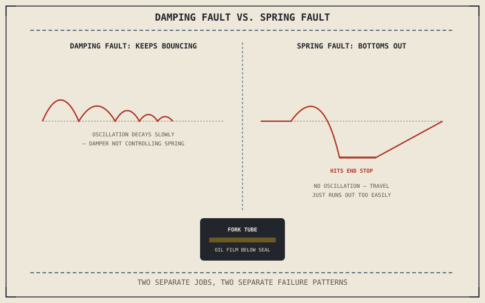

Chapter 11.5 finished with the drivetrain covered. The chassis is next, and Chapter 5.1's two suspension jobs — isolation and contact maintenance — give away where to look first: a suspension complaint usually traces to either the spring or the damper, and Chapter 5.1 already explained that these are genuinely separate components doing genuinely separate work, which means they fail in separate, distinguishable ways.
Chapter 11.5 closed by turning from the drivetrain to the chassis, starting with suspension and handling. This chapter opens that.
Bouncing After a Bump: A Damping Symptom
Chapter 5.3 established that a spring without damping oscillates indefinitely, gradually losing energy only to friction rather than settling promptly. A motorcycle that continues bouncing for several cycles after hitting a bump, rather than settling within one or two, points directly at the damper rather than the spring — worn internals or degraded damping fluid have stopped controlling the spring's compression and rebound the way Chapter 5.3 described. A simple confirming test applies Chapter 11.1's method directly: pressing down firmly on the seat or handlebars and releasing, then counting how many times the suspension bounces before settling, isolates this fault without needing to touch anything else on the bike.
A Harsh or Wallowing Ride: A Spring Symptom Instead
A suspension that doesn't bounce excessively but still rides harshly over small bumps, or wallows deeply and bottoms out over larger ones, points toward the spring rather than the damper. Chapter 5.2 already described both failure directions: too stiff a spring for the rider's weight skips over small bumps that a tyre needs to track for grip, while too soft a spring, or sag that's crept beyond its intended setting as the spring fatigues with age, lets the suspension use up its travel too easily and bottom out on larger hits. Unlike the bounce test above, this symptom shows up as a static or slow-motion complaint rather than an oscillation, which is exactly what separates it from a damping fault.
A suspension that keeps bouncing after a bump has a damping problem; one that rides harshly or wallows and bottoms out has a spring problem — Chapter 5.1's two separate jobs failing in two separate, distinguishable ways.

A diagram contrasting a damping fault, shown as a suspension continuing to oscillate after a bump, against a spring fault, shown as a suspension bottoming out under a large hit without any oscillation.
Fork Oil on the Tubes: A Direct Visual Confirmation
When a damping complaint points toward the front end specifically, a visible film of oil on one fork tube, just below the seal, confirms the cause directly rather than leaving it inferred from the bounce test alone. Chapter 5.6 described a fork's damping cartridge or rods working in a fluid-filled tube sealed against the outside; a failed seal lets that fluid escape, degrading damping on that fork leg specifically while the other leg keeps working normally — a genuinely convenient case where the confirmation Chapter 11.1 called for is visible at a glance.
A Common Misconception, Cleared Up Early
It's a common habit to describe any disappointing suspension feel as "too soft" or "too stiff," reaching for a spring-rate explanation by default. Chapter 8.11 already covered a genuinely different category of handling fault entirely — wobble and weave, oscillations that build rather than damp out, arising from steering geometry and gyroscopic effects rather than from the spring or damper at all. Distinguishing a spring complaint, a damping complaint, and Chapter 8.11's wobble or weave from each other prevents a suspension adjustment from being made when the actual fault sits somewhere else in the chassis entirely.
Where This Leads
The suspension keeps the tyre in contact with the road; the brakes are what actually slow the bike down once that contact is established. Chapter 11.7 turns to diagnosing brake problems next.
Key Concepts to Remember
- Continued bouncing after a bump points to a damping fault; a harsh ride or bottoming out without bouncing points to a spring fault instead.
- A press-and-release bounce test confirms a damping fault directly; visible oil on a fork tube confirms which specific leg has a failed seal.
- Wobble and weave are a separate category of handling fault from spring or damping complaints, arising from geometry and gyroscopic effects rather than the suspension components themselves.
Cross-References
| ← Ch. 5.1 | Established suspension's two separate jobs and two separate components; this chapter uses that separation to distinguish damping faults from spring faults. |
| ← Ch. 5.3 | Established damping's role in preventing indefinite oscillation; this chapter treats continued bouncing after a bump as a direct sign that role has failed. |
| ← Ch. 8.11 | Established wobble and weave as instabilities from geometry and gyroscopic effects; this chapter distinguishes both from ordinary spring or damping complaints. |
| → Ch. 11.7 | Covers diagnosing brake problems, turning from the suspension to the system that actually slows the bike down. |